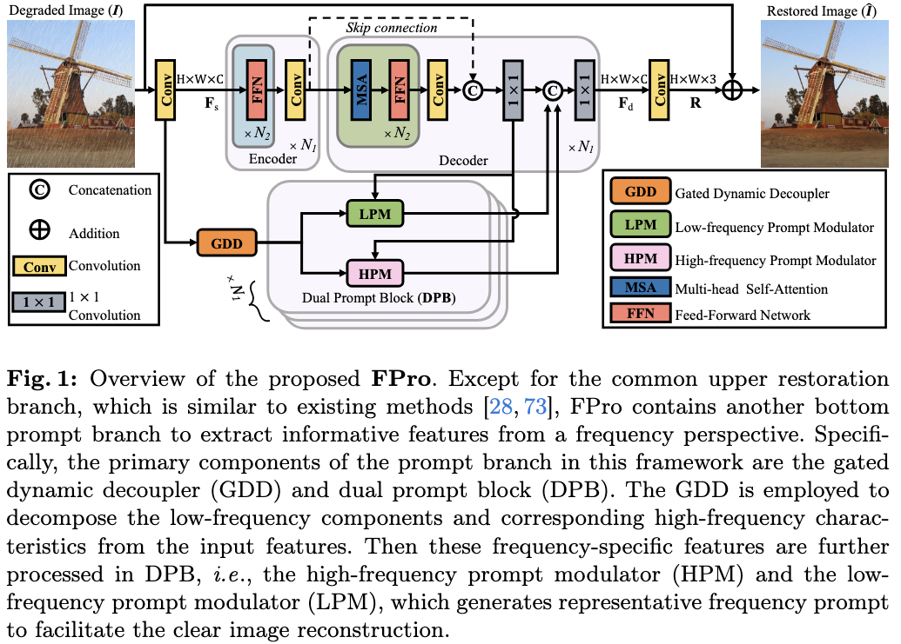
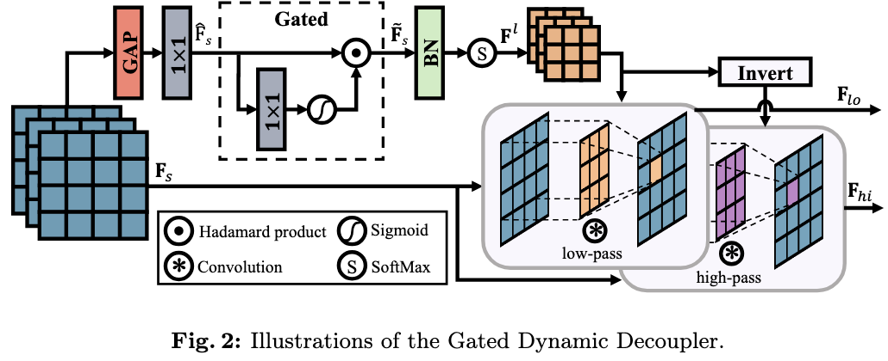
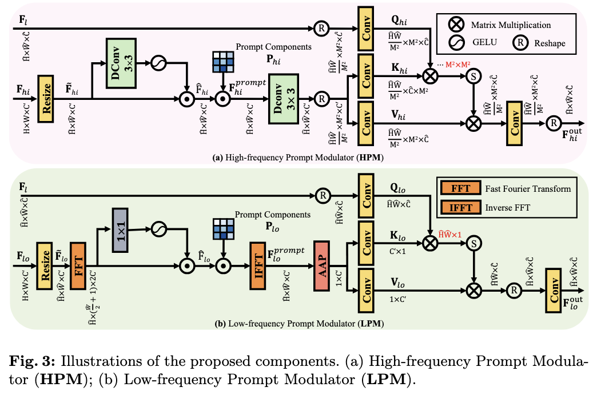
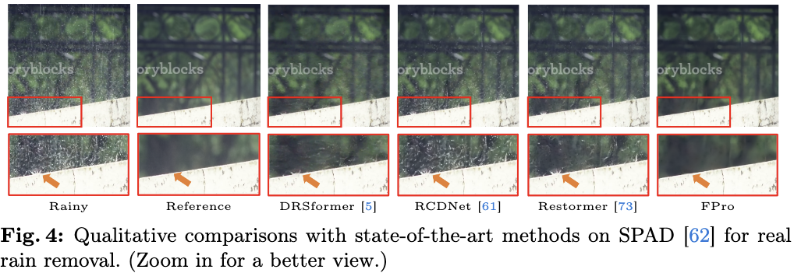
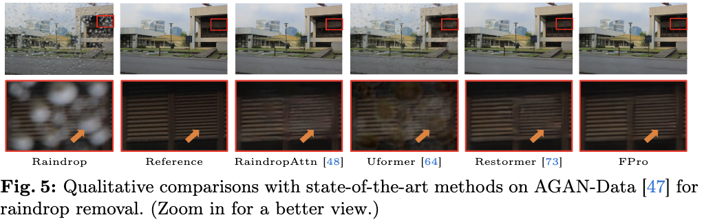
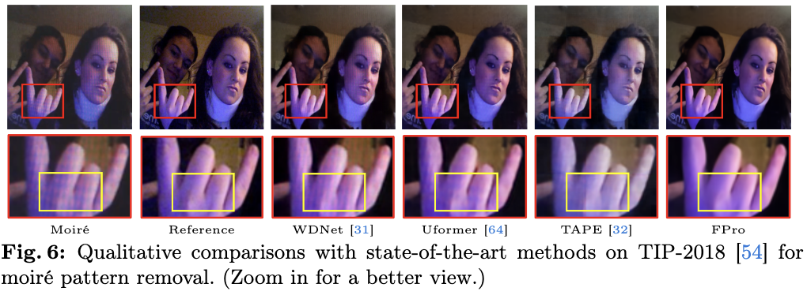

How to explore useful features from images as prompts to guide the deep image restoration models is an effective way to solve image restoration. In contrast to mining spatial relations within images as prompt, which leads to characteristics of different frequencies being neglected and further remaining subtle or undetectable artifacts in the restored image, we develop a Frequency Prompting image restoration method, dubbed FPro, which can effectively provide prompt components from a frequency perspective to guild the restoration model address these differences.Specifically, we first decompose input features into separate frequency parts via dynamically learned filters, where we introduce a gating mechanism for suppressing the less informative elements within the kernels. To propagate useful frequency information as prompt, we then propose a dual prompt block, consisting of a low-frequency prompt modulator (LPM) and a high-frequency prompt modulator (HPM), to handle signals from different bands respectively. Each modulator contains a generation process to incorporate prompting components into the extracted frequency maps, and a modulation part that modifies the prompt feature with the guidance of the decoder features. Experimental results on commonly used benchmarks have demonstrated the favorable performance of our pipeline against SOTA methods on 5 image restoration tasks, including deraining, deraindrop, demoiréing, deblurring, and dehazing.






@inproceedings{zhou_ECCV2024_FPro,
title={Seeing the Unseen: A Frequency Prompt Guided Transformer for Image Restoration},
author={Zhou, Shihao and Pan, Jinshan and Shi, Jinglei and Chen, Duosheng and Qu, Lishen and Yang, Jufeng},
booktitle={ECCV},
year={2024}
}